01
Voile
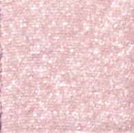
Brilho · rosé prata gelado
Luz translúcida e fria.
EtapaPasso 7 · Canto interno
FunçãoPonto de luz no canto interno para abrir visualmente o olhar.
Pincel Rephr Brush 23
02
Harpia
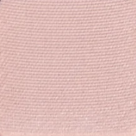
Matte · bege claro frio
Base neutra para iluminar e suavizar.
EtapaPasso 1 · Transição
FunçãoSombra clara e difusa acima do côncavo: cria a passagem suave entre pálpebra e sobrancelha, sem marcas.
Pincel Rephr Brush 15
03
Lûlène
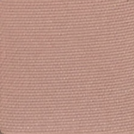
Matte · rosa argila médio
Rosa terroso que aquece sem pesar.
EtapaPasso 2 · Côncavo
FunçãoMarca a dobra natural do olho e cria dimensão com um rosado suave.
Pincel Rephr Brush 14
04
Cyrene
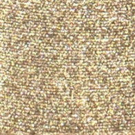
Metálico · verde-prata
Brilho mineral de destaque.
EtapaPasso 7 · Canto interno
FunçãoIlumina o canto interno com um reflexo mineral mais marcante.
Pincel Rephr Brush 23
05
Echo
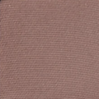
Matte · marrom castanho rosado
Profundidade elegante e macia.
EtapaPasso 4 · Profundidade em “C” externo
FunçãoDefine o canto externo seguindo a raiz dos cílios e o côncavo, alongando o olhar com suavidade.
Pincel Rephr Brush 13
06
Empyrée
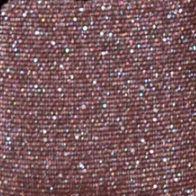
Duocromático · malva nude
Reflexo azul discreto sobre rosa nude.
EtapaPasso 5 · Pálpebra móvel
FunçãoEntrega brilho multidimensional sobre toda a pálpebra móvel.
Pincel Rephr Brush 02
07
Tritonia
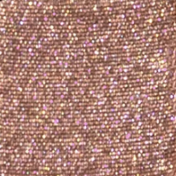
Duocromático · siena coral
Luz quente e sofisticada.
EtapaPasso 5 · Pálpebra móvel
FunçãoIlumina o centro da pálpebra e cria dimensão com calor suave.
Pincel Rephr Brush 02
08
Ciel Figé
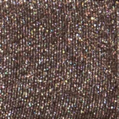
Duocromático · marrom-prata
Brilho frio, ideal para noite.
EtapaPasso 5 · Pálpebra móvel
FunçãoCria um brilho frio e sofisticado, especialmente sobre uma base de profundidade.
Pincel Rephr Brush 02
09
Tideborn
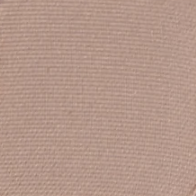
Matte · nude ardósia frio
Sombra discreta e escultora.
EtapaPasso 3 · Côncavo preciso
FunçãoReforça a parte mais funda do côncavo, sem espalhar a cor demais.
Pincel Rephr Brush 13
10
Seirēn
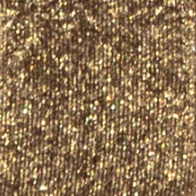
Brilho · ouro-verde antigo
Dourado envelhecido, sem excesso de calor.
EtapaPasso 6 · Centro da pálpebra
FunçãoCria um ponto de luz que dá relevo e abre o olhar.
Pincel Rephr Brush 28
11
Nautilus
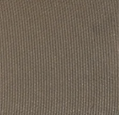
Matte · verde kelp suave
Verde mineral para profundidade.
EtapaPasso 4 · Profundidade em “C” externo
FunçãoAlternativa verde-mineral para definir o canto externo com sofisticação.
Pincel Rephr Brush 13
12
Brindelle
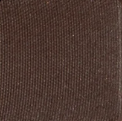
Matte · marrom espresso
Profundidade máxima.
EtapaPasso 8 · Linha superior dos cílios
FunçãoIntensifica a raiz dos cílios e o extremo externo para uma definição noturna.
Pincel Rephr Brush 29